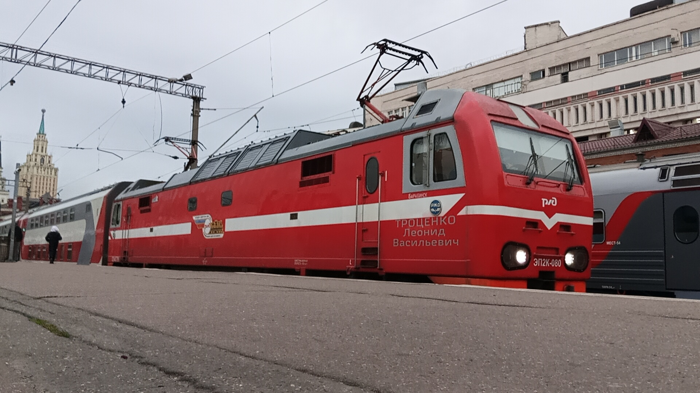
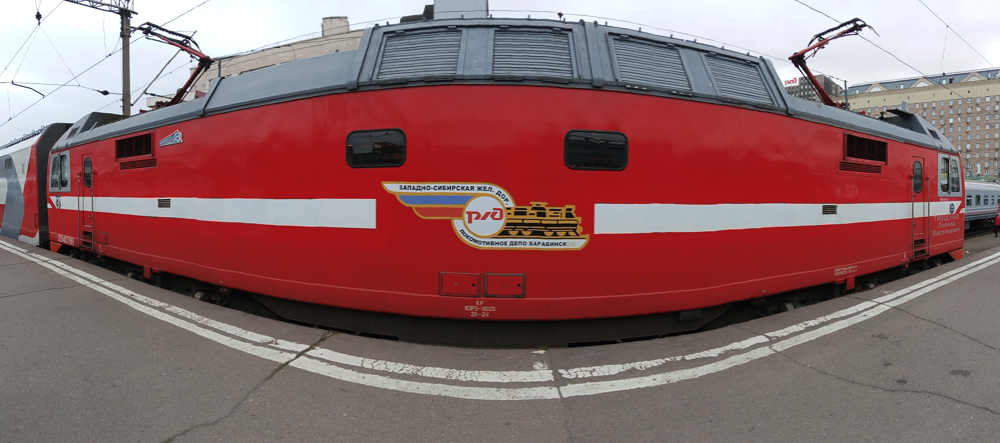
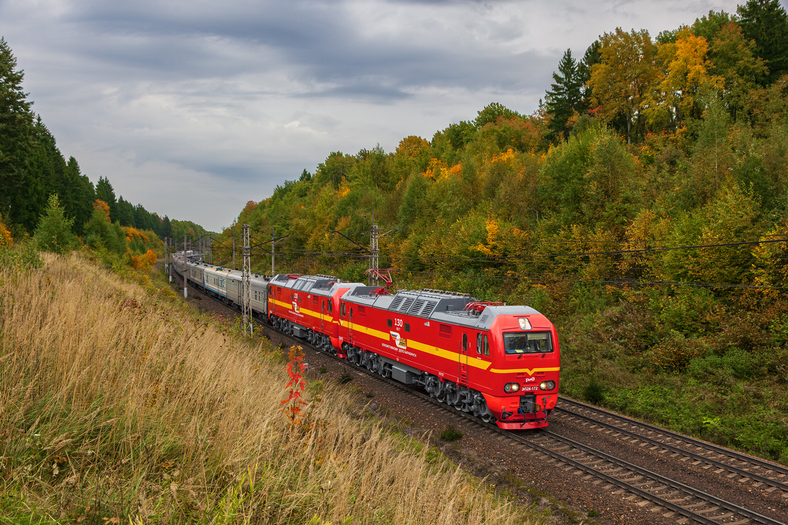

ЭП2К с «барабинской» ливреей
Часть пассажирских электровозов ЭП2К, приписанных к эксплуатационному локомотивному депо ТЧЭ-3 «Барабинск» Западно-Сибирской железной дороги, несёт на себе характерную красно-белую расцветку с эмблемой депо.
Эта расцветка — фирменная и любимая у владельца, депо ТЧЭ-3 «Барабинск». Локомотивы с ней работают на Западно-Сибирской железной дороге и обслуживают пассажирские поезда дальнего следования.
Общая информация
🏭 Производство
Завод: Коломенский завод
Модель: ЭП2К (Электровоз Пассажирский, тип 2, Коллекторный тяговый привод)
Тип: Пассажирский, постоянного тока
📍 Эксплуатация
Дорога: Западно-Сибирская железная дорога
Депо: ТЧЭ-3 «Барабинск»
Текущее состояние: Эксплуатируется
Варианты расцветки
Локомотивы ЭП2К депо ТЧЭ-3 «Барабинск» несут несколько вариантов фирменной расцветки — от стандартной до именной и юбилейной.
🎨 ТЧЭ-3 «Барабинск» (стандартная)
- Красный кузов с белой полосой по борту
- Надпись «ТЧЭ-3 Барабинск» на боковине
- Характерный белый «ус» на лобовой части
- Надпись «РЖД» на борту
Это любимая расцветка владельца — депо ТЧЭ-3 «Барабинск». Она подчёркивает принадлежность локомотивов к одному из старейших и наиболее технически оснащённых локомотивных депо России. Локомотивы с этой расцветкой работают на Западно-Сибирской, Южно-Уральской, Куйбышевской и Свердловской железных дорогах.
007, 010, 011, 044, 080, 094, 100, 114, 126, 133, 135, 144, 160, 162, 172, 200, 201, 206, 257, 259
⭐ Именной — ЭП2К-080 имени Леонида Васильевича Троценко
ЭП2К-080 носит имя Леонида Васильевича Троценко — начальника локомотивного депо Барабинск. Имя присвоено 24 февраля 2012 года.
🎉 Юбилейная расцветка «130 лет ТЧ-3 Барабинск»
В 2026 году депо ТЧЭ-3 «Барабинск» отмечает 130 лет со дня основания. К этому юбилею часть локомотивов ЭП2К получила специальную юбилейную ливрею:
- Красный кузов с жёлтой полосой по борту
- Юбилейный логотип «130 лет» на борту
- Надпись «130 лет Локомотивному депо Барабинск»
Юбилейную ливрею получили как минимум два локомотива:
- ЭП2К-172 — прошёл КР на ЯЭРЗ в сентябре 2026 года
- ЭП2К-206 — отправлен из Москвы с поездом 14 Москва — Челябинск 26 сентября 2026 года
Важно: Юбилейная расцветка — временное оформление. После окончания праздничных мероприятий локомотивы могут вернуться к стандартной барабинской схеме.
Фотогалерея

📸 pfandrom

📸 pfandrom

📸 ЧС200-001(railgallery)
Нажмите на фото для увеличения
«ЭП2К в расцветке ТЧЭ-3 «Барабинск» — это не просто локомотивы, а живая история депо, которое в 2026 году отмечает 130 лет. Юбилейная ливрея — дань уважения труду нескольких поколений железнодорожников».